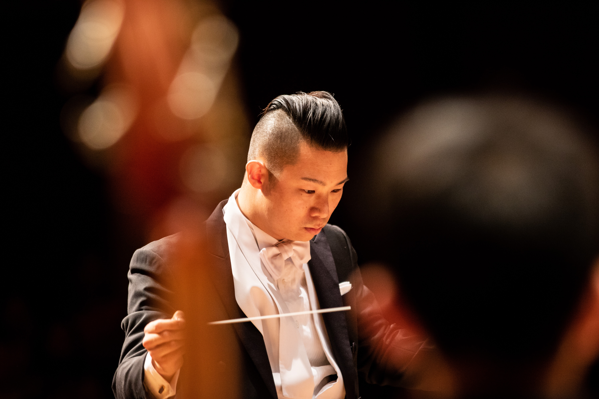
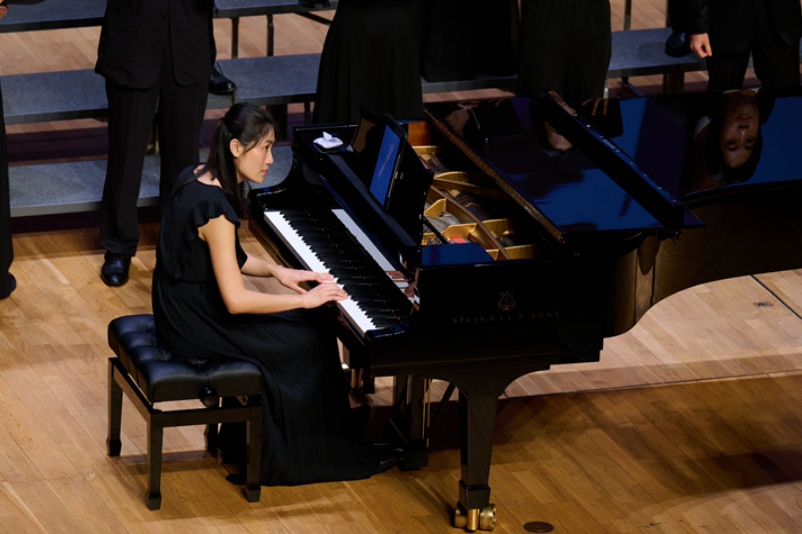

Introduction of CityUHK Choir
The CityUHK Choir, founded in 1990, aims to develop students' interest in choral music, connecting members of different cultures through music and enjoying the joy of singing in a group. The choir offers opportunities for its members to perform on stage, improve their singing techniques, and ultimately enrich the cultural and artistic life of the CityUHK community as well as the general public.
Members of the choir comprise students, alumni, and staff of CityUHK. As an energetic singing group, the choir performs secular songs, pop songs, musical, and movie songs as well as sacred and classical works. The current conductor is Mr CHENG Chi-shan, Christopher.
CityUHK Choir will continue to deliver wonderful performance opportunities for its members, such as CityUHK Arts Festivals, Christmas Concerts, and Annual Performances, to enhance members' individual and cooperative singing skills and to create a friendly and harmonious atmosphere for learning and having fun internally.

Our Conductor
Mr. CHENG Chi Shan, Christopher (2018-Present)

MM (Choral Conducting) Messiah University; CAGS (Orchestral Conducting); MA (Music) CUHK; PgDE (Music) HKBU; BA (Music) HKBU; DipABRSM; LRSM
CHENG currently directs Hong Kong Youth Choir and City University of Hong Kong Choir, he is also a clinician and conducting teacher of Hong Kong Inter-school Choral Festival. Before his current engagements, he was a part-time lecturer at The Education University of Hong Kong.
CHENG's conducting teachers include: Jon Washburn, Brady Allred, James Davey, William Weiner, Nicolas Fink, Chen Yun-hung, Dénes Szabó, Stephen Coker, Rolf Beck and Helmuth Rilling.
Repertoire of CHENG's includes a concert version of Schönberg's Les Misérables, complete J. S. Bach's Lutheran Masses and six Motets, Brahms's Requiem, Haydn's Nelson Mass, Handel's Messiah, Dixit Dominus and Coronation Anthems, Mozart's Requiem in D minor and Coronation Mass, Faure's Requiem, Poulenc's Gloria, Puccini's Messa a Quattro Voci, Rossini's Petite Messe Solennelle, Rutter's Gloria, Mass of the Children and Visions, and Basler's Missa Kenya. He has also prepared choruses for John Rutter and Bob Chilcott.
Projects conducted by CHENG have received Hong Kong Arts Development Council Emerging Artist Grant and Project Grant multiple times, and he was a recipient of Pro Arte Orchestra Scholarship for many years.
CHENG is a finalist and the second runner-up of Asia Pacific Choral Summit Hong Kong Choral Conducting Competition 2019, and he received SCMP Student of the Year 2019 Special Mentorship Award. He captured the category champion (Musica Sacra) with a Gold with Hong Kong Youth Choir in 2016 Singapore International Choral Festival. Conducting the St. Joseph's College Chamber Boys' Choir, he has led the choir to three Golds in Hong Kong Inter-school Choral Festival 2019, 2020, and 2022. Category Champion, Gold, and Creative Choreography Award in 2021 Taiwan International Choral Competition (Children Choir Class), the Outstanding Performance Award in 2022 Takarazuka International Chamber Chorus Contest, and Gold in the Penabur International Choir Festival 2022.
Our Pianist
Miss Crystal LI

Crystal is a classical pianist, specialising in chamber music, duo playing and song accompaniment. As a duo partner, she is in great demand, working with musicians from different parts of the world, including European countries, North America and Asia for recordings, masterclasses, competitions and concerts. She participated in masterclasses and lessons by Helmut Deutsch, Robert Cohen, and Nancy Zhou, to name a few. Her repertoires range from Baroque to contemporary, and vocal to instrumental. She also expanded much of her brass repertoire as she was invited to play in the BBC Young Musician and the International Trombone Festival Japan.
After obtaining a Master's degree in Music from the Chinese University of Hong Kong, she furthered her studies and obtained a Master's degree with distinction at the Royal Academy of Music, majoring in Piano Accompaniment under the tutelage of Professor Ian Brown, alongside the LRAM. Her mentors also include Professor Andrew West, Mr. Chan Sze-yau, Ms. Nancy Loo, Dr. Letty Poon, Mr. Hung Lap and Ms. Vickie Chung. Since 2023, she has started collaborating in opera productions.
Our Executive Committee
2026-2027
President: CHIM Hei Tung, Audrey
External Vice President: CHAN Ho Yeung, Kenxif
Internal Vice President: YUEN Tsz Yu
Promotional Secretary: YOU Sze Wun
Promotional Secretary: YANG Menghan
Financial Secretary: SHEE Hiu Ching
Score Officer: XIANG Jingyi, Emerald